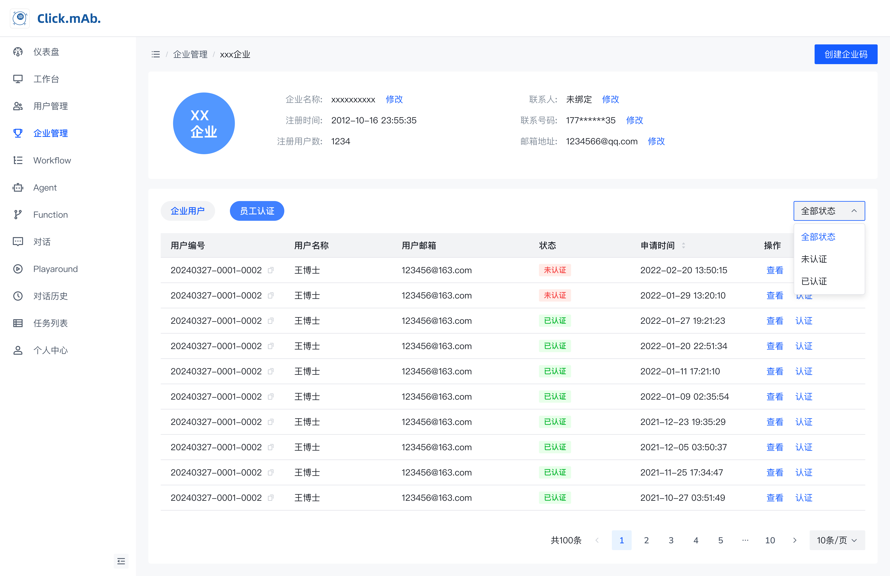
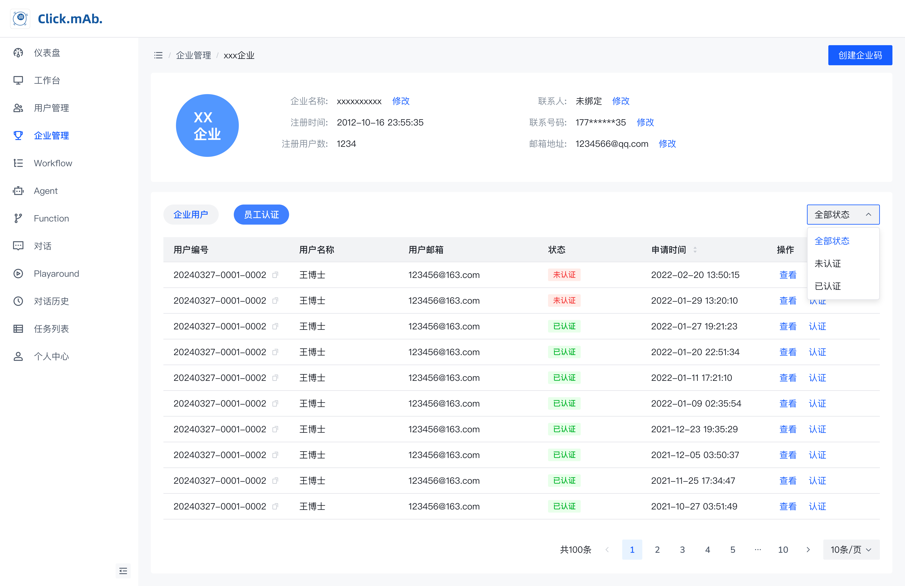

My Projects
Automind (Mobile/Desktop)

Automind is designed to provide users with a direct and intuitive way to interact with our AI large language model. The application offers basic conversation capabilities and integrates web search functionality to enhance responses.
This product serves as the primary touchpoint for users to experience our AI technology in a straightforward and accessible manner.
Technologies Used:
- Figma (UI/UX Design)
- Interactive Prototyping
- User Research
Agent Studio

Agent Studio provides users with a comprehensive and systematic solution for problem-solving. The platform creates multiple professional AI agents that collaborate with users to solve complex tasks and problems.
This product focuses on vertical industry applications such as pharmaceutical research, finance, and physics. We've collaborated with a pharmaceutical research company and a financial institution to create customized Agent products tailored to their specific needs.
Key Features:
- Multi-agent collaboration system
- Domain-specific expertise
- Customizable workflows for different industries
Custom AI Solutions
Below are examples of customized AI solutions we've developed for various industries:
 

Click on the first image to learn more about AI technologies similar to what we use in our solutions.